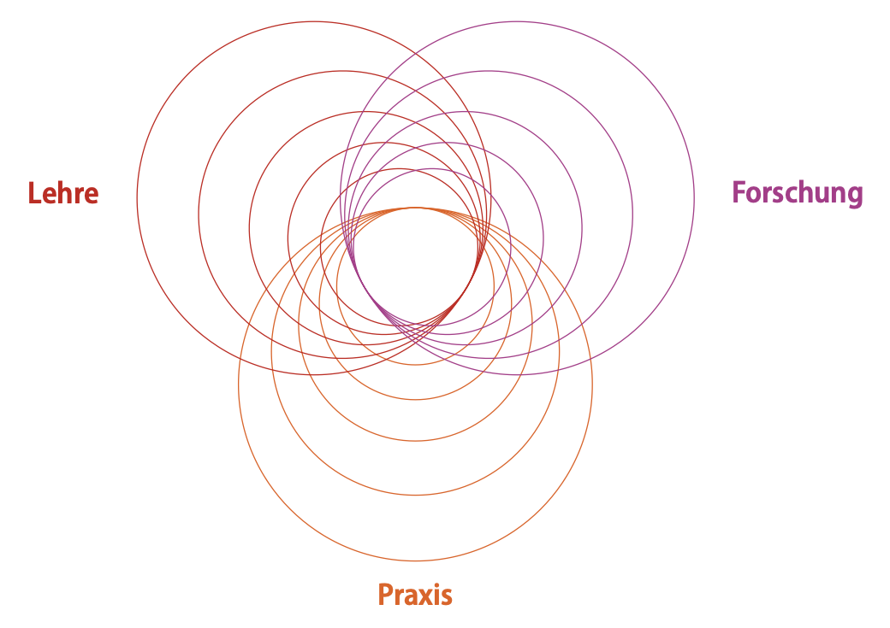

Wie KI konkret Nutzen stiftet
Haben Sie ein Kunden-werben-Kunden-Programm?
ivwKöln · Institut für Versicherungswesen der TH Köln

Lehre
Forschung
Praxis
Welche KI-Innovationen bringen welchen Kundennutzen?Vorgehen in drei Schritten
Use Cases systematisieren
KI-Implementierungsradar: 23 Dimensionen entlang der Wertschöpfung, 43 dokumentierte Use Cases, Reifegrad 1–5.
Nutzen für Kunden klassifizieren
Elf Nutzenkomponenten nach Vershofen, Meffert und Farny: Grundnutzen, Erbauungsnutzen, Geltungsnutzen.
Beides verbinden
Welche KI-Ansätze zahlen auf welchen Kundennutzen ein?
KI wirkt entlang der kompletten Wertschöpfungskette
Ringe = Reife von innen nach außen: Exploration, Pilot, Produktiv, Skaliert, KI-nativ
Segmente = sechs Stufen der Wertschöpfung
Vorreiter: ERGO erkennt mit Cognigy rund 96 % der Anliegen; R+V „Emmie“ löst rund die Hälfte der Anfragen außerhalb der Servicezeiten.
- - - Schwelle 2,5: vom Pilot in den Regelbetrieb
Elf Nutzen für die Kunden
Wahrgenommener Kundennutzen = Leistung − Prämie − Zeit, Mühe und Unsicherheit · Nettonutzen nach Meffert et al. (2024)
Leistung im Schadenfall
„Zahlt die Versicherung vollständig, wenn es darauf ankommt?“
Existenz- und Vermögenssicherung
„Bin ich gegen die Risiken abgesichert, die mich ruinieren könnten – und ist mein Alter versorgt?“
Preis-Leistung
„Zahle ich einen fairen Preis für meinen Schutz?“
Gefühl der Sicherheit
„Kann ich ruhig schlafen?“
Schnelle Hilfe im Notfall
„Hilft mir jemand – sofort?“
Zeit und Bequemlichkeit
„Wie viel Zeit und Mühe kostet mich das?“
Orientierung und Verständlichkeit
„Verstehe ich, was ich habe und was mir zusteht?“
Individualität und Relevanz
„Versteht mein Versicherer, was ich gerade brauche?“
Prävention
„Hilft mir mein Versicherer, dass gar nicht erst etwas passiert?“
Fairness und Vertrauen
„Werde ich fair behandelt – auch wenn eine KI entscheidet?“
Anerkennung und Selbstbild
„Was sagt mein Versicherungsschutz über mich?“
Welche KI-Ansätze zahlen auf welchen Kundennutzen ein?

Ziehen wir uns die Kundenbrille an
KI-Use-Cases erzeugen Nutzen durch
Zeit und Bequemlichkeit als häufiger Nutzen für Kunden
Use Cases im KI-Radar
Reife 2026 auf der Skala 1–5 · Schwelle zum Regelbetrieb 2,5
Highlight-Case NICE Cognigy
Nutzen hoch, Beschwerden runter
Individualisierung und Hyperpersonalisierung: hohes Potenzial, bislang wenig bekannte Use Cases
KI-Marktforschung
Bedürfnisse verstehen, bevor das Produkt entsteht
ERGO testet synthetische Panels: KI-Personas auf Basis echter Kundendaten. Offene Antworten wertet die KI in Sekunden aus.
KI-Personalisierung von Anschreiben
Jeder Kunde bekommt seinen Brief
Wertgarantie: KI entwirft Antworten auf Kundenfeedback, Mitarbeitende geben frei. 60 % der Kunden finden Hinweise auf Versorgungslücken aus ihren Daten gut.
Next Best Offer und Next Best Action
Das passende Angebot im richtigen Moment
DA Direkt: Voice-Agent „Dana“ macht bei Kündigungsabsicht in Echtzeit ein Alternativangebot – über 70 % der Fälle ohne Menschen.
Was benötigt man zur Umsetzung?
Vom WOW-Effekt zum Standard
Vorreiter
Einzelne Versicherer setzen KI-Use-Cases produktiv ein – Wettbewerbsvorteil für wenige.
Begeisterung
Zeit sparen, erklären, personalisieren: Use Cases schaffen WOW-Momente aus Kundensicht.
Standard
Geprägt durch Branchen mit weniger Regulatorik – Kunden erwarten es selbstverständlich.